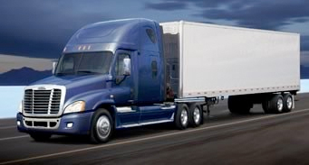
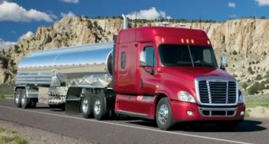
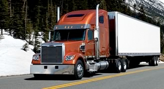
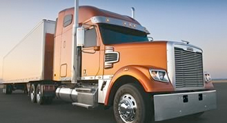
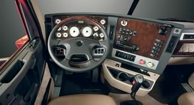

The majority of Clockwork’s tractors are Freightliner® cascadia, or century class. They are
commonly equiped with:
440 to 455 horsepower Detroit Diesel S60 and DD13/ DD15 engines
Jake Brake® engine brake
Eaton 10-speed transmission
Premium interior with cloth and carpet treatments
Inner-spring mattress
AM/FM radio w/Weather Band, SD card slot, USB, & Aux ports
In-cab technology
Engine off Webasto or Espar heaters
Top safety equipment, such as roll-stability and OnGuard anti-collision systems





We also employ the latest technology from PeopleNet for navigation and routing, logging
miles, safety logs, monitoring vehicle and trailer, and communication between the driver
and company.